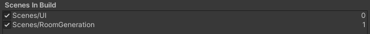
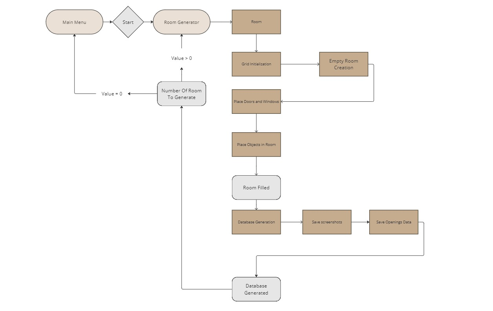
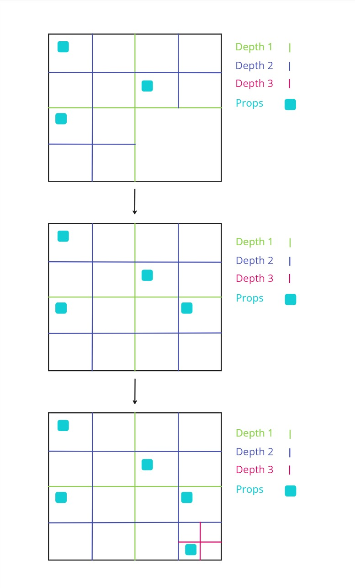

Indoor Scene Generator Toolkit
ISGT is a Unity project aimed at generating realistic virtual rooms. They are then used to create datasets filled with screenshots and the information about each window or door in the image. These datasets can be used to train image recognition AIs.
How to use
To use the software, you only need to download the latest realease, unzip it and start ISGT.exe.
You can change the settings and the output folder via the menu, and then start the process. It can be stopped at any point by pressing escape.
By default, screenshots and JSONs are saved at /ISGT_Data/Export/.
Parameters
The process is fully parametrable thanks to the following settings :
- General settings
- Number of room
- Screenshots per room
- Image resolution : the size of the screenshots, from 640 x 360 to 2560 x 1440
- Generation settings
- Rooms max size
- Props density : the amount of furniture in the room
- Doors density : the max amount of doors per room
- Windows density : the max amount of windows in the room
- Camera settings
- Camera max rotation : the max angle of the camera around x,y and z
- FOV : the diagonal Field Of View of the camera
- ISO
- Aperture
- Focus Distance
- Precision settings
- Raycasts amount : the number of rays shot when calculating camera visibility
Performances
Most of these parameters (except from camera settings) have an impact on performances and will affect the duration of the process. The estimated remaining time is displayed on the bottom left corner of the screen.
Presets
When applying new settings, a preset file is created and can then be selected to retrieve the same configuration. They can be found in the Ressource folder of the app if the user need to share or delete one.
Generated data
Each screenshot is matched with a Json containing info about the room, the seeds, the camera settings and about each opening in the image, namely doors and windows. Here is an example :
{
"CameraData": {
"FieldOfView": 52.2338448,
"NearClipPlane": 0.3,
"FarClipPlane": 1000.0,
"ViewportRectX": 0.0,
"ViewportRectY": 0.0,
"ViewportRectWidth": 1920,
"ViewportRectHeight": 1080,
"Depth": -1.0,
"IsOrthographic": false
},
"ScreenshotData": {
"OpeningsData": [
{
"Type": "Window",
"Dimensions": {
"Height": 1.603815,
"Width": 1.13412368,
"Thickness": 0.10204263
},
"DistanceToCamera": 7.12805271,
"RotationQuaternionFromCamera": {
"w": 0.457306623,
"x": -0.004237673,
"y": 0.8892608,
"z": 0.008240416
},
"OpenessDegree": 0.6515185,
"VisibilityRatio": 0.9289916,
"BoundingBox": {
"Origin": [
1118,
454
],
"Dimension": [
118,
205
]
},
"VisibilityBoundingBox": {
"Origin": [
1120,
458
],
"Dimension": [
116,
200
]
}
},
],
"CameraRotation": {
"w": 0.5645235,
"x": 0.0,
"y": 0.825417,
"z": 0.0
}
}
}
Work on ISGT
You can fork the GitHub repository and start helping us improve the tool.
You can find the technical documentation here.
Documentation
This section will address all the different technical aspects of the project, so that others can take on the development. You can learn about:
Environment
Unity
ISGT was developed using Unity 2022.3.26f1 on Windows but can be edited with higher versions of Unity and any OS.
Plugins
All plugins used in this project are official plugins developed and maintained by Unity Technologies. They will be automatically installed when running the project for the first time.
You might need to install another plugin if using an IDE which is not Rider or Visual Studio and want full integration.
Here are the list of all the plugins used in for the project :
-
2D Sprite
1.0.0: create and manage sprites for UI -
JetBrains Rider Editor
3.0.28: provides an integration for using Rider IDE -
Newtonsoft Json
3.2.1: used for advanced json serialization and deserialization -
Post Processing
3.4.0: collection of effects and image filters that can be applied to the cameras -
Pro Builder
5.2.2: used to build, edit, and texture custom geometry -
Test Framework
1.1.33: used to run Edit mode and Play mode tests in Unity -
Text Mesh Pro
3.0.6: text solution -
Toolchain Win Linux x64
2.0.9: Cross-compilation toolchain to build player target Linux on host Windows -
Unity UI
1.0.0: set of tools for developing user interfaces for games and applications -
Visual Studio Editor
2.0.22: integration for supporting Visual Studio as IDE.
Imports :
Every props are furnitures apart from doors and windows come from the AI2 Thor Project.
The doors meshs come from the Free Wood Doorpack available in the unity asset store.
The skybox comes from the 8K sbybox pack available in the unity asset store.
Build
To build the project and create an executable, you only need the Unity Editor. The only constraint is that the scenes need to be numbered correctly, like in the following image.

Then, you can build the project by going to File > Build Settings and selecting the scenes in the correct order. You can then select the target platform and build the project.
Windows is the only build target that has been tested, but building for other platforms should work as well using the correct Unity plugins.
Note that the .exe will not work if not associated with the other files created by Unity.
Steps
There 3 big steps to generate synthetic data with ISGT:

Find details in the following sections:
Room generation
Recursion backtracking algorithm also known as the depth-first search algorithm
The room generation algorithm is based on the recursion backtracking algorithm also known as the depth-first search algorithm. The algorithm is used to generate a room with a grid of cells. The algorithm starts by creating a grid of cells. It then chooses a random cell as the current cell and marks it as visited. The algorithm then chooses a random unvisited neighbor of the current cell and moves to it. The algorithm repeats this process until it reaches a cell that has no unvisited neighbors. When this happens, the algorithm backtracks to the previous cell and repeats the process until all cells have been visited. The result is an empty room with walls, floor and ceiling. The next sub-steps will replace some walls with doors and windows.
Room generation parameters
The room generation algorithm has several parameters that can be adjusted to change the room structure. The parameters are as follows:
- Width: The width of the room in cells. default value is 2.5 meters.
- Height: The height of the room in cells. default value is 2.5 meters.
- Max room size: The maximum size of the room in cells. default value is room 40x40 cells.
Openings placement
Openings are the doors and windows. To create one, you need to attach to the prefab a box collider and the Openings.cs script. This script will allow you to set the opening type (door or window) and the mean of opening (translation or rotation). You’ll also need to link the opening’s moving part, the center transform and the structure.

Figure: Opening game object's components example
Once the room layout is complete, exterior walls are procedurally replaced by walls containing doors and windows, to match the opening amount set by the user. These walls already contains windows, but doors are placed after the wall so the color can be chosen randomly.
To create a wall prefab, you can modify the base wall that has no openings and dig holes of the right size using the ProBuilder tool. You can then add either the windows to the prefab, or a door spawner with the WallDoor.cs script.
These walls can then be added to the lists in the RoomGenerationData.asset scriptable object, located in Assets/Data so that they can be picked by the generation algorithm.
Textures
After the walls and openings placement, textures are applied to each side of the room, to the floor, to the ceiling and to window frames.
The textures are chosen from the 4 lists of textures in the RoomGenerationData.asset scriptable object, located in Assets/Data.
To allow new textures to be used, you can create Unity’s materials and add them to one of the lists. The materials must be set to the Standard shader and have a texture in the Albedo slot.
Props placement
Quad tree
The props are placed in the room using a quad tree : the space is divided into four equal nodes, which represent rectangles in the room. The props are placed one by one randomly in one of the biggest empty nodes, namely the empty nodes with the lowest depth. The node chosen is then divided into four nodes once again. The process is repeated until all the props are placed inside the room. This ensures that the props have the highest chance of being placed without overlapping with other props, thus limiting the number of tries needed to place them.

Figure: 3 steps of the quad tree division process for prop placement.
Optimal nodes
For certain types of furnitures, the node choice is not fully random and follow some rules. This allows to place the furniture in a more realistic way. Thus, to generate other kind of rooms, you would have to add new types of furniture and new sets of rules.
Cuurently there are 2 main rules :
- Beds : They are more likely to be placed in nodes close to the walls, and is aligned with the wall.
- Fridges and sofa : They are more likely to be placed in nodes close to the walls, and oriented with their back against the wall.
They are implemented in the QuadTreeNode.cs script.
Spawner props
Some props place other props around them when they are instantiated. This helps having a coherent placement, while still having a random aspect. The props instancianting other props are the following :
- TV stands : They place a random TV on top of them, with a small angle.
- Tables : They place a random amount of chairs around them, and make them face the table.
- Desk : They place a random armchair in front of them.
Add a prop
To create a new prop prefab, the game object needs some mandatory components :
- A mesh : The visual representation of the prop.
- Accurate colliders : The colliders must be as close as possible to the mesh, to avoid overlapping with other props. They need to have
SimObjPhysicsas tag. - A box collider : It will be used to check which nodes are containing the prop, it doesn’t need to be accurate. However, it needs to be on the
Ignore Raycastlayer and to have theBoundingBoxtag. props.csscript : You need to attach this script to the prop, link the prop’s perfab and the bounding box collider. You also need to set the prop’s type from a list.PropsSpawner.csscript (optional) : If the prop is a spawner, you need to attach this script to the prop. Then, link the list of prefabs to spawn, as well as the list of spawn points’ transforms, and indicate the type of the prop.
Figure: Prefab components and tree example
Once the prefab is created, it needs to be added in the props list of the RoomGenerationData.asset scriptable object, located in Assets/Data.
Database Generation
After the room is generated, the data is collected in the DatabaseGenerator.cs script. Each steps will be detailed in the following sections.
Camera placement
First, all the empty nodes are retrieved from the room’s quad tree. The camera is the placed randomly in one of them, and a random rotation is applied according to the settings. We then ensure that the camera is not placed too close to the walls, the ceiling or to props to avoid clipping issues. This is done by creating a collider sphere around it and checking for collisions.
Save Camera view
Secondly, a screenshot is generated using this custom method in CameraScreenshot.cs which allow to save the camera view while ignoring the UI.
private IEnumerator Capture()
{
// Create a RenderTexture to save the camera view
RenderTexture rt = new RenderTexture(imageWidth, imageHeight, 24);
cameraToCapture.targetTexture = rt;
// Create a 2D texture to save the screenshot
Texture2D screenShot = new Texture2D(imageWidth, imageHeight, TextureFormat.RGB24, false);
cameraToCapture.Render();
// Activate the RenderTexture and read the pixels
RenderTexture.active = rt;
screenShot.ReadPixels(new Rect(0, 0, imageWidth, imageHeight), 0, 0);
screenShot.Apply();
// Reset the camera and RenderTexture
cameraToCapture.targetTexture = null;
RenderTexture.active = null;
Destroy(rt);
// Save the screenshot
byte[] bytes = screenShot.EncodeToPNG();
File.WriteAllBytes(savePath, bytes);
yield return null;
}
Data collection
Finally, the data about each openings in the image is collected :
Distance
The distance from the camera is calculated by substrating the camera position from the opening position.
Angle
The quaternion angle between the camera and the opening is calculated using the Quaternion.LookRotation() method.
Dimensions
The dimensions of the opening are calculated by using the Bounds.size property of the opening’s collider.
Bounding boxes
Full bounding box
The bounding box is the 2D rectangle that contains the opening. It is calculated by using the Bounds.min and Bounds.max properties of the opening’s collider in the Openings.cs script.
Visibility bounding box
The visibility bounding box is the 2D rectangle that contains only the visible part of the opening. It is calculated by casting numerous rays from the camera to the opening and finding the intersection points. The bounding box is then calculated using the intersection points in the Openings.cs script.
public BoundingBox2D GetVisibilityBoundingBox()
{
gameObject.TryGetComponent<BoxCollider>(out BoxCollider openingBounds);
_width = RoomsGenerator.GetOpeningWidth(openingBounds.size);
_height = openingBounds.size.y;
int minX = Screen.width + 1;
int maxX = -1;
int minY = Screen.height + 1;
int maxY = -1;
float widthStep = _width / Mathf.Sqrt(NumberOfPoints);
float heightStep = _height / Mathf.Sqrt(NumberOfPoints);
for (float x = -_width / 2f + widthStep / 2; x < _width / 2f; x += widthStep)
{
for (float y = -_height / 2f + heightStep / 2; y <= _height / 2f; y += heightStep)
{
var thisTransform = transform;
Vector3 positionOffset = thisTransform.right * x + thisTransform.up * y;
Vector3 aimPoint = GetCenter() + positionOffset;
if (IsPointVisible(aimPoint) && IsPointOnScreen(aimPoint))
{
Vector3 screenPoint = _mainCamera.WorldToScreenPoint(aimPoint);
minX = (int)Mathf.Min(minX, screenPoint.x);
maxX = (int)Mathf.Max(maxX, screenPoint.x);
minY = (int)Mathf.Min(minY, screenPoint.y);
maxY = (int)Mathf.Max(maxY, screenPoint.y);
}
}
}
// 640 * 360 is the minimum resolution
int screenShotWidth = 640 * MainMenuController.PresetData.Resolution;
int screenShotHeight = 360 * MainMenuController.PresetData.Resolution;
// Scale coordinates to screenshot size
minX = (int)(minX * screenShotWidth / Screen.width);
maxX = (int)(maxX * screenShotWidth / Screen.width);
minY = (int)(minY * screenShotHeight / Screen.height);
maxY = (int)(maxY * screenShotHeight / Screen.height);
return new BoundingBox2D(new Vector2Int(minX, minY), maxX - minX, maxY - minY);
}
private bool IsPointVisible(Vector3 aimPoint)
{
GameObject mainCamera = _mainCamera!.gameObject;
Vector3 aimPointDirection = aimPoint - mainCamera.transform.position;
if (Physics.Raycast(mainCamera.transform.position, aimPointDirection, out var hit, float.MaxValue))
{
if (hit.collider.gameObject == gameObject || hit.collider.gameObject.transform.parent == transform)
return true;
}
return false;
}
// Check if a point is on the screen, i.e. in the camera's view frustum
private bool IsPointOnScreen(Vector3 point)
{
Vector3 screenPoint = _mainCamera!.WorldToViewportPoint(point);
return screenPoint.x is > 0 and < 1 && screenPoint.y is > 0 and < 1 && screenPoint.z > 0;
}
Visibility ratio
The visibility ratio is the ratio of the visibility bounding box area over the full bounding box area. The data is only kept if the visibility ratio is different from 0, to avoid collecting data from openings that are not visible in the image.
Save data
The screenshot is then saved, along with a matching JSON file containing the collected data about each visible openings and the camera information. The JSON file is structured as follows:
{
"CameraData": {
"FieldOfView": 52.2338448,
"NearClipPlane": 0.3,
"FarClipPlane": 1000.0,
"ViewportRectX": 0.0,
"ViewportRectY": 0.0,
"ViewportRectWidth": 1920,
"ViewportRectHeight": 1080,
"Depth": -1.0,
"IsOrthographic": false
},
"ScreenshotData": {
"OpeningsData": [
{
"Type": "Window",
"Dimensions": {
"Height": 1.603815,
"Width": 1.13412368,
"Thickness": 0.10204263
},
"DistanceToCamera": 7.12805271,
"RotationQuaternionFromCamera": {
"w": 0.457306623,
"x": -0.004237673,
"y": 0.8892608,
"z": 0.008240416
},
"OpenessDegree": 0.6515185,
"VisibilityRatio": 0.9289916,
"BoundingBox": {
"Origin": [
1118,
454
],
"Dimension": [
118,
205
]
},
"VisibilityBoundingBox": {
"Origin": [
1120,
458
],
"Dimension": [
116,
200
]
}
},
],
"CameraRotation": {
"w": 0.5645235,
"x": 0.0,
"y": 0.825417,
"z": 0.0
}
}
}
A JSON is also created for each room, containing the seeds, the room’s dimensions, the generation’s time and the placement data. The seeds can be used to reproduce random generation.
Testing
test test
Roadmap
ISTG is still in development, here are some ideas for future improvements :
Better props placement
The props placement is currently done using a quad tree, which is a fast way to avoid overlapping. However, the placement could be improved by adding more rules for certain types of props. But having to write specific rules for each type of prop can be tedious. A better way would be to use an AI model to predict the best placement for each prop.
Different room types
Currently, the room is generated with a single type of room in mind, which is a common living room. Adding more types of rooms, such as bedrooms, kitchens, or even offices or shed would be a great improvement. This would require adding new types of furniture, of textures and new rules for the props placement.
Other shapes of room than rectangles could also be generated, such as L-shaped rooms, or rooms with multiple floors.
Improved visual quality
To ensure that the model trained with the data behaves well in real life, the quality of the images must be as realistic as possible. This can be achieved by adding more detailed textures, more complexe props and to implement shaders to improve the lighting.
It would also be interesting to add post-processing effects to the camera to make the images more realistic.
Generating the rooms next to each other would also help by allowing to see other rooms through the windows, instead of just the skybox.
Other objects detection
Currently, the software only generates data about doors and windows because its initial purpose was to train an AI for a drone to detect these objects. However, the software could be used to generate data about other objects, such as furniture, plants, or even people. This would require adding new types of props, new rules for their placement and new types of textures.
The visibility detection algorithm would also need to be improved to work with more complexe shapes.